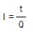
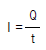
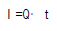
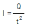

농기계정비기능사 (2002-01-27 기출문제)
1과목: 농기계정비
1. 실린더(Cylinder)에서 측압(드러스트)이라 하는 것은 다음 중 어느 것인가?
- 압축행정에서 피스톤의 상승을 방해하는 압력
- 피스톤이 실린더벽을 섭동할 때 실린더쪽에 가해지는 압력
- 배기행정에서 피스톤의 상승을 방해하는 압력
- 피스톤이 상사점에 도달할 때 일어나는 마찰
(정답률: 79%)

2. 디젤 기관에서 노킹이 유발된다. 방지책으로 맞지 않는 것은?
- 세탄가가 높은 연료를 사용한다.
- 분사 시기를 조정한다.
- 노즐의 분무 상태를 검사 후 불량하면 수리한다.
- 압축 압력을 낮춘다.
(정답률: 67%)
3. 압축가스가 실린더에서 크랭크실로 새는 경우에 해당 되지 않는 것은?
- 피스톤 링이 파손되었거나 마멸 되었을 때
- 피스톤 링이 홈에 고착 되었을 때
- 밸브의 밀착 상태가 불량하게 되었을 때
- 실린더 라이너가 마멸 되었을 때
(정답률: 38%)
4. 커넥팅 로드(Connecting-rod)를 조일 때의 방법으로 다음중 틀린 것은?
- 볼트 너트의 나사산이 불량한 것은 새부품으로 교환한다.
- 볼트를 최대한 꽉 조인다.
- 토크렌치를 사용하여 볼트를 알맞게 조인다.
- 볼트를 조인 다음 절곡와셔를 볼트에 구부려 고정한다.
(정답률: 71%)
5. 기관의 회전을 원할하게 하는 것은?
- 크랭크 축
- 플라이 휠 카버
- 플라이 휠
- 크랭크 암
(정답률: 58%)
6. 다음 중 윤활유의 작용이 아닌 것은?
- 윤활, 냉각작용
- 밀봉, 부식작용
- 청정, 소음완화작용
- 완충, 응력분산작용
(정답률: 65%)
7. 오일의 소비가 과대하게 되는 원인은?
- 마멸된 베어링과 피스톤링
- 엔진의 과열
- 기능이 약한 라디에이터
- 적당치 않은 점화
(정답률: 59%)
8. 단속기 아암의 러빙블록이 마모되면 다음 중 어떤 현상이 생기는가?
- 캠각은 작아진다.
- 캠각은 커진다.
- 접촉압력이 커진다.
- 아무 상관이 없다.
(정답률: 49%)
9. 연료 분사 노즐의 효율을 시험할 때 검사하지 않는 것은?
- 분사상태
- 분사시간
- 후적유무
- 분사개시압력
(정답률: 40%)
10. 윤활유 청정기 형식에서 급유펌프로 나온 오일의 일부만을 여과하고 나머지는 그대로 윤활부에 급유토록 한 형식은?
- 전류식
- 분류식
- 샨트식
- 자력식
(정답률: 63%)
11. 트랙터가 발진시 진동이 심한 원인이 될 수 없는 것은?
- 릴리스 레버의 높이가 불평형일 때
- 클러치판의 허브가 마모 되었을 때
- 페이싱에 기름이 부착되었을 때
- 플라이 휠 장착 압력판 및 클러치 커버의 체결이 풀어졌을 때
(정답률: 75%)
12. 동력 경운기의 클러치의 형식으로 맞는 것은?
- 건식다판 마찰식
- 건식단판 마찰식
- 원추형 마찰식
- 습식다판 마찰식
(정답률: 50%)
13. 경운변속이 되지 않을 때의 고장에 맞는 것은?
- 주변속 레버의 굽음
- 브레이크 조절 불량
- 변속포오크 마멸
- 경심의 부적당
(정답률: 47%)
14. 동력경운기용 엔진의 압축압력의 점검은 어느 상태에서 해야 하는가?
- 엔진을 시동 시키기 전에
- 엔진이 작동되고 있을 때
- 엔진의 장기 보관 전에
- 엔진을 천천히 운전시킨 후에
(정답률: 59%)
15. 라디에이터 세척법 중 해당되지 않는 것은?
- 수도물에 의한 방법
- 세척제에 의한 방법
- 유압에 의한 세척법
- 물재킷 세척법
(정답률: 79%)
16. 브레이크 라이닝의 구비 조건이 아닌 것은?
- 마찰계수가 0.3~0.5정도일 것
- 팽창 또는 변질하지 않을 것
- 열 전달률이 적을 것
- 마멸이 균일하고 내구력이 클 것
(정답률: 49%)
17. 변속기가 중립에 있을 때 발생하는 소음은?
- 바르게 조정되지 않은 기어 바꿈 링키지
- 닳은 기어
- 헐거워진 추진축
- 점도가 큰 윤활유를 사용
(정답률: 25%)
18. 조향 핸들이 너무 무거울 때의 원인은?
- 조향 워엄과 로울러의 조정불량
- 앞차축 킹핀과 부시의 마멸
- 드래그 링크 보올의 마멸
- 허브 너트가 풀어짐
(정답률: 49%)
19. 디젤기관의 분사시기 확인 시험에서 잠시 제거하여야 할 부품은 어느 것인가?
- 배출밸브(딜리버리밸브)
- 노즐스프링
- 노즐호울더
- 가압핀
(정답률: 56%)
20. 승용 트랙터의 연료 여과기는 몇 시간 마다 점검해야 하는가?
- 매 50시간 마다 청소한다.
- 매 100시간 마다 청소한다.
- 매 200시간 마다 청소한다.
- 매년 1회 정기점검 한다.
(정답률: 32%)
2과목: 농기계전기
21. 바인더에서 사용되는 클러치 방식으로 맞는 것은?
- 마찰 클러치
- 유체 클러치
- 맞물림 클러치
- 벨트 장력 클러치
(정답률: 41%)
22. 파종시 일정한 간격으로 한알 또는 여러개를 몰아 심는 방식은?
- 조파식
- 산파식
- 점파식
- 확산식
(정답률: 50%)
23. 콘덴서 기동형 단상 유도 전동기가 무부하 상태에서 기동하지 않을 때와 관계가 없는 사항은?
- 퓨즈의 용단
- 고정자 코일의 단선
- 콘덴서 불량
- 단자 접속의 반대
(정답률: 39%)
24. 3상 유도 전동기에서 회전자계를 만드는 것은?
- 고정자(스테이터)
- 회전자(로터)
- 브러시
- 냉각 홴
(정답률: 30%)
25. 진압기를 사용할 때 원주가 너무 크면 나쁘다. 적당한 대책은?
- 길이를 조정한다.
- 지름을 조정한다.
- 무게를 조정한다.
- 컬리베이터를 부착한다.
(정답률: 20%)
26. 동력경운기 주클러치 간극이 맞지 않을 때 점검 정비할 내용이 아닌 것은?
- 조정나사로 알맞게 조정한 후 고정나사로 견고하게 조인다.
- 조정나사의 조임은 클러치 허브와 클러치 축의 스플라인과 일치하는 지점까지 조인다.
- 조정나사의 높이가 평행하여 클러치 시프트가 유동이 없도록 한다.
- 클러치 어셈블리를 완전 분해시 클러치 심음 볼트가 풀려도 관계없다.
(정답률: 79%)
27. 동력경운기에 부착하는 작업기풀리 지름이 21㎝이고 기관 회전속도가 2000rpm이며 작업기의 회전속도가 850rpm일때 기관풀리의 지름은?
- 8.925㎝
- 0.112㎝
- 49.41㎝
- 80.952㎝
(정답률: 44%)
28. 콤바인 급치의 배열이 입구쪽에서 부터 올바른 순서는?
- 정소치-보강치-병치
- 보강치-병치-정소치
- 병치-정소치-보강치
- 정소치-병치-보강치
(정답률: 45%)
29. 다음 중 라디에이터의 코어 막힘률(%)의 계산 공식은 어느 것인가?
- (신품－검사품) ÷ 신품 × 100
- (신품－검사품) ÷ 검사품 × 100
- (검사품－신품) ÷ 신품 × 100
- (검사품－신품) ÷ 검사품 × 100
(정답률: 65%)
30. 다음 작업기 중에서 후진을 하며 작업을 하여야 하는 것은?
- 제초 파쇄기
- 두둑 성형기
- 비닐 피복기
- 심경용 구굴기
(정답률: 75%)
31. 어떤 도체를 t초 동안에 Q[C]의 정기량이 이동하면 이때 흐르는 전류 I[A]는?




(정답률: 46%)
32. 2[V]의 기전력으로 20[J]의 일을 할때 이동한 전기량은?
- 10[C]
- 0.1[C]
- 40[C]
- 2400[C]
(정답률: 31%)
33. 6[Ω], 8[Ω], 9[Ω]의 저항 3개를 직렬로 접속한 회로에 5[A]의 전류가 흐를 때 회로에 공급한 전압은?
- 30[V]
- 40[V]
- 45[V]
- 115[V]
(정답률: 45%)
34. 축전지 연결 방법에서 같은 극끼리 연결하는 방법은?
- 병렬 연결
- 직曺병렬 연결
- 직렬 연결
- 복합 연결
(정답률: 73%)
35. 전해액이 자연 감소 되었을 때는 다음중 어느 것을 보충 하는 것이 가장 좋은가?
- 묽은 황산
- 같은 비중의 전해액
- 증류수
- 수도물
(정답률: 67%)
36. 전기적 에너지를 받아서 기계적 에너지로 바꾸는 것은?
- 변압기
- 정류기
- 전동기
- 발전기
(정답률: 75%)
37. 기동 전동기(Starter)의 구동 피니언은 무엇에 의해 역회전이 방지 되는가?
- 자기 스위치 (magnetic switch)
- 오버 러닝 클러치 (over running clutch)
- 계철 (yoke)
- 계자 (field)
(정답률: 66%)
38. 단속기 접점의 소손원인이 아닌 것은?
- 점화 플러그 과열
- 고전압 유기
- 스프링 장력 약화
- 축전기 회로의 잘못된 저항
(정답률: 16%)
39. 점화장치 중 점화코일의 온도가 상승하면 코일내의 저항값은 어떻게 변화하는가?
- 저항이 증가한다.
- 저항이 감소한다.
- 저항이 증가하다가 감소한다.
- 저항값은 변하지 않고 일정하다.
(정답률: 40%)
40. 다음은 점화 플러그 불꽃 시험의 원리를 설명한 것이다. 가장 낮은 전압으로도 방전이 용이하게 나타낼 수 있는 것은?
- 실린더 압축 압력 1㎏/㎝2
- 실린더 압축 압력 5㎏/㎝2
- 실린더 압축 압력 10㎏/㎝2
- 실린더 압축 압력 15㎏/㎝2
(정답률: 44%)
3과목: 농기계안전관리
41. 점화 플러그에서 불꽃이 튀지 않을 경우에 점검할 필요가 없는 것은?
- 압축 압력
- 고압 코드
- 단속기 접점
- 스톱보턴의 전기회로
(정답률: 61%)
42. 충전회로에서의 레귤레이터가 하는 역활은?
- 교류를 직류로 바꾸어 준다.
- 직류를 교류로 바꾸어 준다.
- 기관의 동력으로 부터 교류 전류를 발생시킨다.
- 충전에 필요한 일정한 전압을 유지시켜 준다.
(정답률: 62%)
43. 충전전류의 크기와 충전방법에 따라 분류한 것이다. 해당되지 않는 것은?
- 정 전류 충전
- 정 전압 충전
- 급속 충전
- 이온 충전
(정답률: 59%)
44. 광원의 광도가 200cd인 경우 거리 1m되는 곳의 조도는 200Lux이다. 거리가 3m이면 조도는 몇Lux인가?
- 11.3 Lux
- 22.2 Lux
- 34 Lux
- 50 Lux
(정답률: 41%)
45. 비중계의 눈금이 1.280 이고, 이 때 전해액의 온도는 -10℃ 이다. 표준상태의 비중으로 환산한 것은?
- 1.242
- 1.249
- 1.252
- 1.259
(정답률: 29%)
46. 다음 근로재해의 생리적 요인과 관계가 적은 것은?
- 건강 조건
- 근로 조건
- 생활 조건
- 취업환경 조건
(정답률: 27%)
47. 다음 중 재해의 형식의 분류에 들지 못하는 것은?
- 조건
- 상해
- 가해물
- 사고
(정답률: 63%)
48. 병충해 방제 작업시 살포자가 지켜야할 사항 중 틀린 것은?
- 장화, 고무장갑, 작업복등 보호구를 착용해야 한다.
- 약액이 직접 몸에 닿지 않도록 해야 한다.
- 바람을 안고 살포해야 한다.
- 살포자와 운전자는 손으로 신호하여 기계조작과 살포 작업이 안전하게 유지되도록 해야 한다.
(정답률: 78%)
49. 동력 경운기로 하향 경사면을 고속 주행할 때 조향 클러치의 작동은 어떻게 하는 것이 가장 좋은가?
- 한쪽을 잡는다.
- 양쪽을 모두 잡는다.
- 평면에서와 같이한다.
- 조향 클러치를 사용하지 않고, 핸들을 운전자의 힘으로 조작한다.
(정답률: 50%)
50. 다음 중 점검 결과를 적은 것이다. 정비 또는 수정을 요하는 사항은?
- 축전지 전해액 비중이 1.250 이다.
- 트랙터 클러치 유격이 30mm 이다.
- 타이어 공기압이 4kg/cm2 이다.
- 냉각수가 캡까지 가득차 있다.
(정답률: 33%)
51. 작업복을 선정할 때의 일반적인 유의 사항중 적당치 않은 것은?
- 내구성이 좋아야 한다.
- 신체에 노출이 많도록 한다.
- 디자인이 좋아야 한다.
- 작업중 활동에 저항을 주지 말아야 한다.
(정답률: 47%)
52. 가스용접시 역화의 원인이 아닌 것은?
- 산소 압력이 아세틸렌 압력보다 높을 때
- 조정기의 작용이 불량할 때
- 토치가 막혔을 때
- 산소 압력과 아세틸렌 압력이 불균일할 때
(정답률: 47%)
53. 보호구의 관리로 부적당한 것은?
- 서늘한 곳에 보관할 것
- 산, 기름 등에 넣어 변질을 막을 것
- 발열성 물질을 보관하는 주변에 두지 말 것
- 모래, 땀, 진흙 등으로 오염된 경우는 세척 후 말려서 보관할 것
(정답률: 80%)
54. 버니어캘리퍼스로 측정할 수 없는 것은?
- 내경
- 외경
- 깊이
- 축의 휨
(정답률: 72%)
55. 소화액이 수용액인 소화기로 엮어진 것은 어느 것인가?
- 증발성 액화 소화기, 산알카리 소화기
- 물소화기, 분말소화기
- 분말소화기, 간이소화기
- 산알카리 소화기, 물소화기
(정답률: 36%)
56. 안전사고가 일어나기 쉬운 장소에서 작업자가 가장 먼저 구비해야 하는 것은?
- 응급상자
- 소화기
- 보호구
- 전화기
(정답률: 66%)
57. 보호구 사용시 유의사항 중 맞지 않는 것은?
- 월 1회이상 사용자가 직접 점검한다.
- 작업에 필요한 보호구를 반드시 착용한다.
- 기름과 격리시켜 보관한다.
- 발열성 물질을 주변에 두지 않는다.
(정답률: 70%)
58. 다음은 전동공구의 안전수칙이다. 틀린 것은?
- 감전사고에 주의한다.
- 회전하는 공구의 과부하에는 신경을 쓰지 않는다.
- 전선코드의 취급을 안전하게 한다.
- 물이 묻은 손으로 작업해서는 안된다.
(정답률: 86%)
59. 공기 기구(에어기구)를 사용하는 작업에 적당하지 않는 것은?
- 방진 안경을 사용한다.
- 공기기구의 반동으로 생길 수 있는 사고는 미연에 예방한다.
- 공기기구의 미끄럼부에는 윤활유를 주어서는 안된다.
- 고무호스가 꺾겨 공기가 새지 않도록 주의한다.
(정답률: 32%)
60. 가스 화재를 일으키는 가연물질로만 되어 있는 것은?
- 에탄, 프로판, 부탄, 등유, 가솔린
- 에탄, 메탄, 부탄, 가솔린, 경유
- 메탄, 에탄, 프로판, 부탄, 수소
- 에탄, 프로판, 부탄, 펜탄, 가솔린
(정답률: 57%)